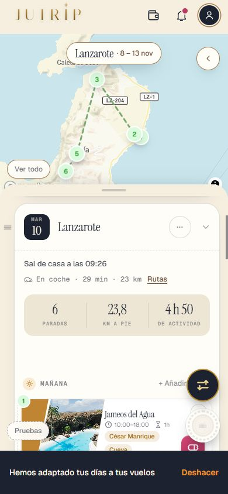
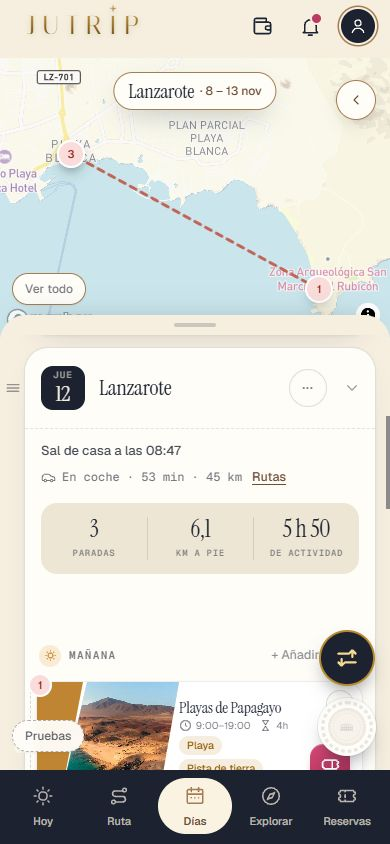
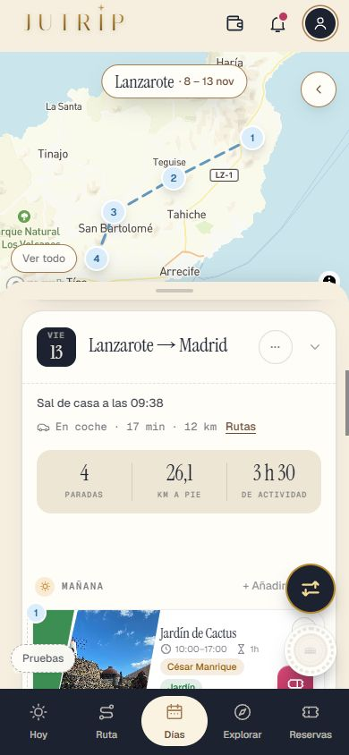
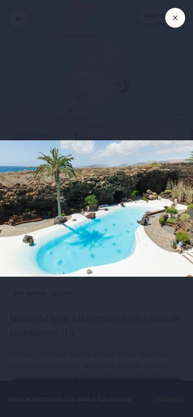
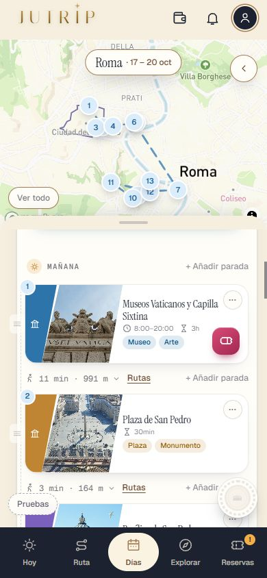
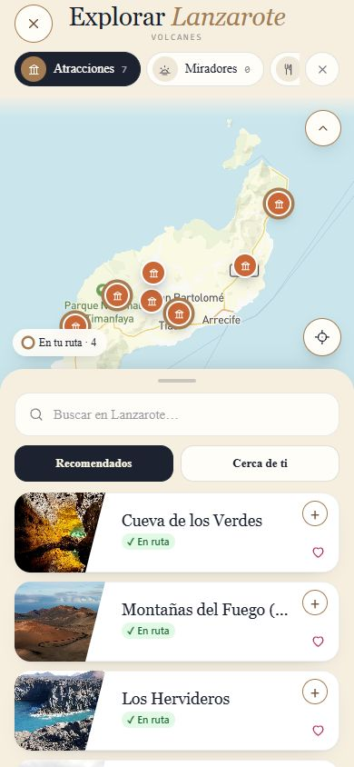
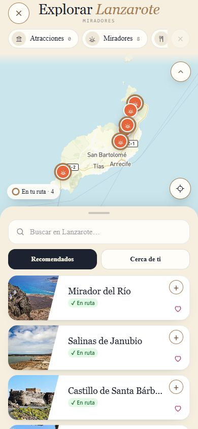

Retoques de las tarjetas
Todo vale igual para Roma y Lanzarote. Capturas de móvil del viaje de Eric (martes 10, jueves 12, viernes 13) y de un día de Roma.
Martes 10 · Lanzarote
El trayecto en una línea («En coche · 29 min · 23 km · Rutas»), el horario «10:00–18:00» sin «Abre».

martes 10
Jueves 12 · Lanzarote
«Playa Blanca» (no «El paseo marítimo…»), el Faro con Faro y Atardecer, nada detrás de la cena.

jueves 12
Viernes 13 · día de vuelta
El aeropuerto solo aquí, sin cena.

viernes 13
La foto de la ficha, en grande

Jameos del Agua a pantalla completa
Un día de Roma (igual que antes, con la misma línea)

Roma
EXPLORAR de Lanzarote

Volcanes: pines, filtros con número

Miradores
Para mirar en el móvil